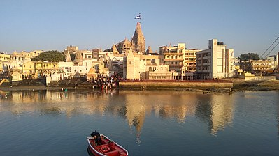

this is table
Ahmedabad
Mehsana
Rajkot
Bhavnagar
Surat
Vadodara
Nadiad
Palanpur
Himatnagar
Jamnagar
Junagadh
bhuj kutch
Surendranagar
Amreli
Valsad
Bharuch
Godhra
Gandhinagar
Bardoli
Dahod
Navsari
Rajpipla
Anand
Patan
Porbandar
Vyara
Vastral
surat west
Vadodara rural
dang
Gandhidham
Veraval
Botad
/td>

Dwarka
Mahisagar
Morbi
/td>
ChhotaUdaipur_
Bavla
 Jamnagar
Jamnagar Vyara
Vyara Vastral
Vastral surat west
surat west Vadodara rural
Vadodara rural